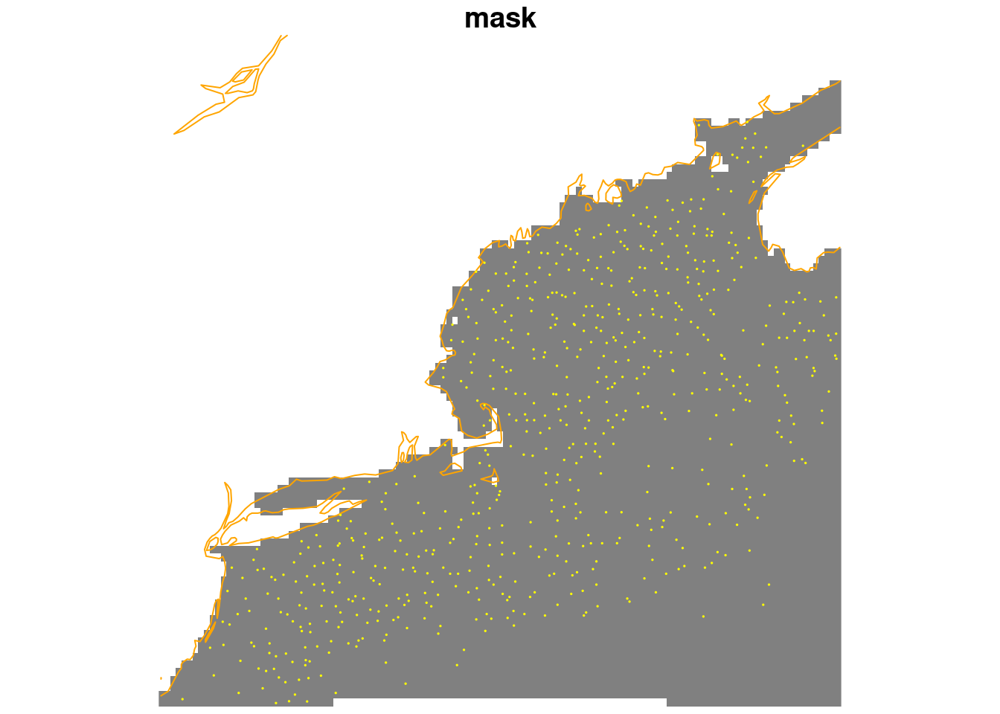
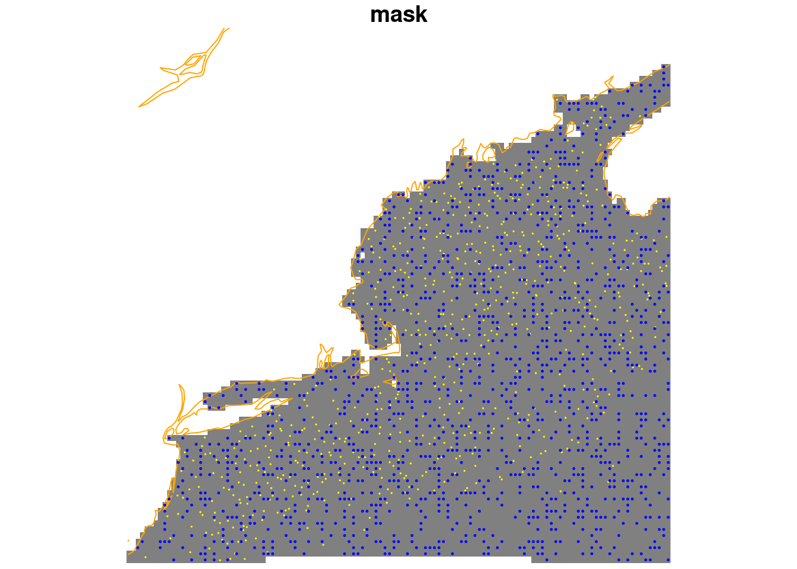

source("setup.R")Background
No choice is the wrong choice as long as you make a choice. The only wrong choice is choosing not to make one. ~ Jake Abel
Traditional ecological surveys are systematic, for a given species survey data sets tell us where the species is found and where it is absent. Using an observational data set (like OBIS) we only know where the species is found, which leaves us guessing about where they might not be found. This difference is what distinguishes a presence-abscence data set from a presence-only data set, and this difference guides the modeling process.
When we model species distributions we are trying to define the environments where we should expect to find a species as well as the environments we would not expect to find a species. With OBIS data we have in hand the locations of observations, and we can extract the environmental data at those locations. To characterize the unoccupied environments we are going to have to sample what is called “background” (aka “background points” and “pseudo-absences”.)
We assume that we want the number of background points to be roughoy balanced with the number of observations. What balance means is open to interpretation, but if we have 100 observations then we woud like to have 50 to 200 background points in order to be balanced.
We want these background samples to roughly match the regional preferences of the observations; that is we want to avoid having observations that are mostly over Georges Bank while our background samples are primarily around the Bay of Fundy. We want there to be some reasonable proximity between occupied and unoccupied environments.
Here we want to satisfy a couple of basic requirements…
balance the number of observations and background points,
avoid selecting background points that coincide with observations,
choose background points where we can measure the same enviromental characteristics that measure for observations.
Keep in mind we will be glossing over important details; there is much more to investigate here, but tempus fugit and our course of study is brief. At the end we want to have in hand a set of locations that can be a companion for the obseravtions.
1 Setup
As always, we start by running our setup function. Start RStudio/R, and relaod your project with the menu File > Recent Projects.
We also will need the Brickman mask and the observation data. Note that we are making a model for each month, so we shall select background points by month. Given what we have learned about the distribution of observations over the months of year this may be surprising; some months have many more observations than other months. So, if we chose to balance the number of observation and background points and the number of observations vary, won’t some models be better informed with more data? The answer is yes. Does it matter? Good question!
OK - load the data we need.
coast = read_coastline()
obs = read_observations(scientificname = "Mola mola")
db = brickman_database() |>
filter(scenario == "STATIC", var == "mask")
mask = read_brickman(db, add_depth = FALSE)Let’s start with one month as an example. Later we’ll loop through the remaining months to collect all of the background points. Mola mola observations are concentrated between April and November so let’s pick August. We filter out those observations, and then plot the mask with the points drizzled on top.
aug_obs = obs |>
filter(month == "Aug")
plot(mask, reset = FALSE, key.pos = NA, breaks = "equal")
plot(coast, col = "orange", add = TRUE)
plot(st_geometry(aug_obs), col = "yellow", cex = 0.1, add = TRUE)
So the are 2520 August observations, but some of those points are densely distributed. In fact, it may be that we have multiple points in each raster cell. We have a function to help use reduce “thin” the observations so that we have just one observation per cell.
1.1 Thinning observations
Thinning is the process we use to sub-sample observations so that they are more evenly sampled across the spatial domain. We do this to discourage accidental sampling bias.
thinned_aug_obs = thin_by_cell(aug_obs, mask)
plot(mask, reset = FALSE, key.pos = NA, breaks = "equal")
plot(coast, col = "orange", add = TRUE)
plot(st_geometry(aug_obs), col = "yellow", cex = 0.1, add = TRUE)
We now have thinned the observations to just 1231 records. That has certainly made a difference - no more dense lines of observations even though we can discern the survey track lines.
1.2 Thinning while aggregating array cells
But we could pull another tool out of the bag of tricks - we could interpolate the underlying mask array cells so that it has larger cells. We do this by merging (aggregating) neighboring cells first, then thinning the observations. We’ll try aggregating by a factor of 2 - which means that two neighboring cells (in horizontal and in vertical) are merged. That is a 2x2 block of smaller cells becomes one bigger cell. An aggregating factor 3 means three cells in each direction are merged (a 3x3 block becomes 1 cell), and so on.
wicked_thinned_aug_obs = thin_by_cell(aug_obs, mask, agg_fact = 2)
plot(mask, reset = FALSE, key.pos = NA, breaks = "equal")
plot(coast, col = "orange", add = TRUE)
plot(st_geometry(wicked_thinned_aug_obs), col = "yellow", cex = 0.1, add = TRUE)
Whoa, we now have thinned the observations to just 682 records. If you didn’t know that many of the observations came from straight-line surveys then you might not notice the faint structure of the distribution. Alas, you do have the knowledge so you probably can pick out the lines, but all in all this is a pretty good representation.
Note
Heads up! Some species might not need to thin the observations so agressively. Some might not need us to aggregate the cells. Mola mola is a highly observed species during certain times of the year, so it merits aggressive thinning. Keep in mind you may need to treat your species observations differently - keep your options open!
1.3 Randomly sample background points
Now that we have a reasonable set of observation, we now need to choose points around those to represent the background. The sample_background() function requires three input arguments: the set of observations, the raster array and the number of points desired. We can also ask for the original presence observations to be returned. We’ll modify the output by adding a column identifying the month.
obsbkg = sample_background(wicked_thinned_aug_obs, mask, 2*nrow(wicked_thinned_aug_obs),
return_pres = TRUE) |>
mutate(month = "Aug", .before = 1) # .before tells R where to put this new column
obsbkgSimple feature collection with 2046 features and 2 fields
Geometry type: POINT
Dimension: XY
Bounding box: xmin: -74.72716 ymin: 38.87438 xmax: -65.02004 ymax: 45.54306
Geodetic CRS: WGS 84
# A tibble: 2,046 × 3
month class geometry
* <chr> <fct> <POINT [°]>
1 Aug presence (-67.84244 43.55836)
2 Aug presence (-70.65 42.95)
3 Aug presence (-68.16927 42.38727)
4 Aug presence (-68.27 42.78)
5 Aug presence (-66.538 43.432)
6 Aug presence (-66.45789 42.38764)
7 Aug presence (-69.54475 42.84995)
8 Aug presence (-69.13372 43.60813)
9 Aug presence (-72.62202 39.48414)
10 Aug presence (-66.933 43.283)
# ℹ 2,036 more rowsLet’s see where these fall relative to each other.
plot(mask, reset = FALSE, key.pos = NA, breaks = "equal")
plot(coast, col = "orange", add = TRUE)
plot(obsbkg |> filter(class == "presence") |> st_geometry(),
col = "yellow", cex = 0.1, add = TRUE)
plot(obsbkg |> filter(class == "background") |> st_geometry(),
col = "blue", cex = 0.2, add = TRUE)
These would be the data locations we feed into the model. So is that reasonable solution? At first glance it seems to be, so we’ll choose this background sampling approach; aggressive thinning followed by random sampling while avoiding observations. We can’t know if another approach might be better until we actually start modeling.
2 Model input per month
So, how do we go about producing a model input data set for each month? For that we need to iterate; if iteration is new to you please be sure to check out our iteration tutorial. We are going to make a small function that handles creating the combined observation/background dataset for each month. We’ll use a for-loop to iterate over the months of the year: Jan, Feb, …, Nov, Dec.
Note
Heads up! Your assignment will be to use this function in an lapply() function that will iterate over the months for you in lieu of a for-loop. More on that later…
2.1 A function we can reuse
Here we make a function that needs at least three arguments: the complete set of observations, the mask used for thinning (possibly agressively) and sampling, as well as the month to filter the observations. The pseudo-code might look like this…
for a given month
filter the obs for that month
thin the obs (possibly agressively)
sample the background
return the combined thined observations/random backgroundPhew! That’s a lot of steps. To manually run those steps 12 times would be tedious, so we roll that into a function that we can reuse 12 times instead.
This function will have a name, make_model_input_by_month. It’s a long name, but it makes it obvious what it does. First we start with the documentation.
#' Builds a model input data set for a given month
#'
#' @param mon str, the month abbreviation for the month of interest ("Jan" by default)
#' @param obs table, the complete observation data set
#' @param raster stars, the object that defines the sampling space, usually a mask
#' @param species str, the name of the species prepended to the name of the output files.
#' (By default "Mola mola" which gets converted to "Mola_mola")
#' @param path the output data path to store this data (be default "model_input")
#' @param agg_fact num, aggregation factor for aggressive thinning. By default is 1 which means no aggregation. For very dense observations, try a value of 2 to thin more aggressively.
#' @param obs_to_bkg num, the ratio of observations to background
#' @param min_obs num, this sets a threshold below which we wont try to make a model. (Default is 10)
#' @return a named two element list of greedy and conservative model inputs - they are tables
make_model_input_by_month = function(mon = "Jan",
obs = read_observations("Mola mola"),
raster = NULL,
obs_to_bkg = 2,
species = "Mola mola",
path = data_path("model_input"),
agg_fact = 1,
min_obs = 10){
# the user *must* provide a raster
if (is.null(raster)) stop("please provide a raster")
# filter the obs
obs = obs |>
filter(month == mon[1])
# check that we have at least some records, if not enough then alert the user
# and return NULL
if (nrow(obs) < min_obs){
warning("sorry, this month has too few observations: ", mon)
return(NULL)
}
# make sure the output path exists, if not, make it
path = make_path(path)
thinned = thin_by_cell(obs, raster, agg_fact = agg_fact)
# make the greedy model input by sampling the background
model_input = sample_background(thinned, raster, nrow(thinned) * obs_to_bkg,
return_pres = TRUE) |>
mutate(month = mon, .before = 1)
# save the data
filename = sprintf("%s-%s-model_input.gpkg",
gsub(" ", "_", species),
mon)
write_sf(model_input, file.path(path, filename))
# return, but disable automatic printing
invisible(model_input)
}3 Reusing the function in a loop
The above may seem like a lot, but it really simply reproduces we took earlier with a few safety checks. Now we use a for loop to run through the months, calling our function each time. Happily, the built-in variable month.abb has all of the month names in order.
for (this_month in month.abb){
result = make_model_input_by_month(this_month,
obs = read_observations(scientificname = "Mola mola"),
raster = mask,
species = "Mola mola",
path = data_path("model_input"),
agg_fact = 2,
min_obs = 3)
}4 Listing the output files
You can always look into you output directory to see if the files we made, but even better might be to use the computer to list them for you. If your species is found in sufficient numbers year round you’ll have 12 files. However, any month that has fewer than the minimum number of observations will not have an output file.
Here we have the computer generate the list of files that were written.
path = data_path("model_input")
files = list.files(path, full.names = TRUE)
files [1] "/home/btupper/ColbyForecasting_data/model_input/Mola_mola-Apr-model_input.gpkg"
[2] "/home/btupper/ColbyForecasting_data/model_input/Mola_mola-Aug-model_input.gpkg"
[3] "/home/btupper/ColbyForecasting_data/model_input/Mola_mola-Dec-model_input.gpkg"
[4] "/home/btupper/ColbyForecasting_data/model_input/Mola_mola-Feb-model_input.gpkg"
[5] "/home/btupper/ColbyForecasting_data/model_input/Mola_mola-Jan-model_input.gpkg"
[6] "/home/btupper/ColbyForecasting_data/model_input/Mola_mola-Jul-model_input.gpkg"
[7] "/home/btupper/ColbyForecasting_data/model_input/Mola_mola-Jun-model_input.gpkg"
[8] "/home/btupper/ColbyForecasting_data/model_input/Mola_mola-Mar-model_input.gpkg"
[9] "/home/btupper/ColbyForecasting_data/model_input/Mola_mola-May-model_input.gpkg"
[10] "/home/btupper/ColbyForecasting_data/model_input/Mola_mola-Nov-model_input.gpkg"
[11] "/home/btupper/ColbyForecasting_data/model_input/Mola_mola-Oct-model_input.gpkg"
[12] "/home/btupper/ColbyForecasting_data/model_input/Mola_mola-Sep-model_input.gpkg"5 Reading the files
We know that each file should have a table with spatial information included. Let’s read one back and plot it.
x = read_sf(files[1])
filename = basename(files[1])
plot(x['class'],
axes = TRUE,
pch = "+",
extent = mask,
main = filename,
reset = FALSE)
plot(coast, col = "orange", add = TRUE)
6 Recap
We have prepared what we call “model inputs”, in particular for Mola mola, by selecting background points. There are lots of other approaches, too, but for the sake of learning stick with this approach. We developed a function that will produce our model inputs for a given month, and saved them to disk. Then we read at least one back and showed that we can restore these from disk.
7 Coding Assignment C02
Create a function to read the correct model input when given the species, month and path.
Use the menu option File > New File > R Script to create a blank file. Save the file (even though it is empty) in the “functions” directory as “my_model_input.R”. Use this file to build a function (or set of functions) that uses this set of arguments. Below is a template to help you get started. Copy the code below to your “my_model_input.R” and then edit it.
#' Reads a model input file given species, month, approach and path
#'
#' @param scientificname chr, the species name
#' @param mon chr month abbreviation
#' @param path chr the path to the data directory
read_model_input = function(scientificname = "Mola mola",
mon = "Jan",
path = data_path("model_input")){
# your part goes in here
}8 Challenge C02
And here we add one challenge…
Create a function that accepts a species name and path and returns all of the model inputs for all available months. Hint: try using R’s built in iterator lapply() and the bind_rows() function. The output should be a single spatial data table with columns month, class and geometry.